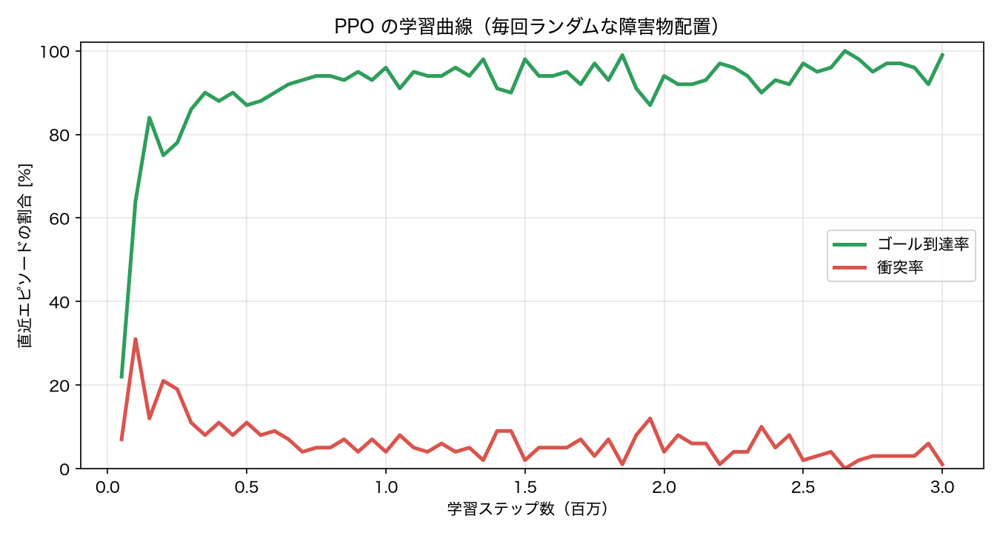
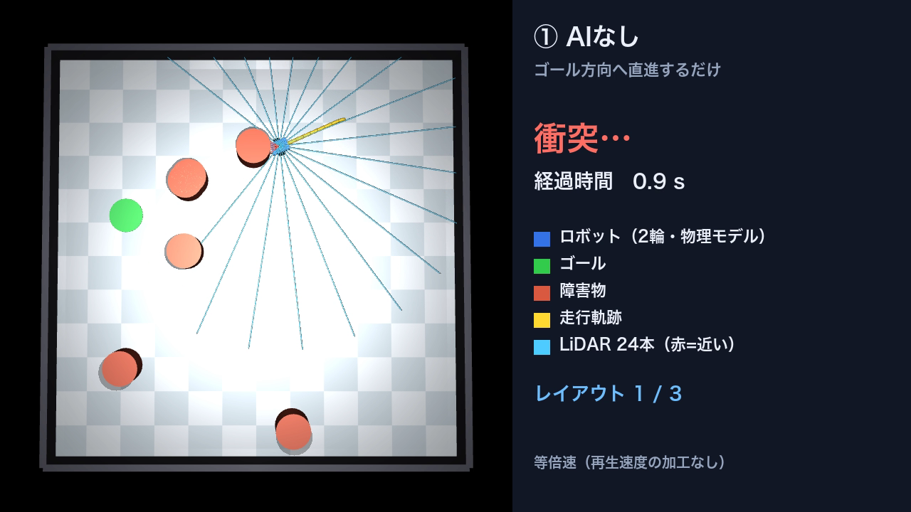
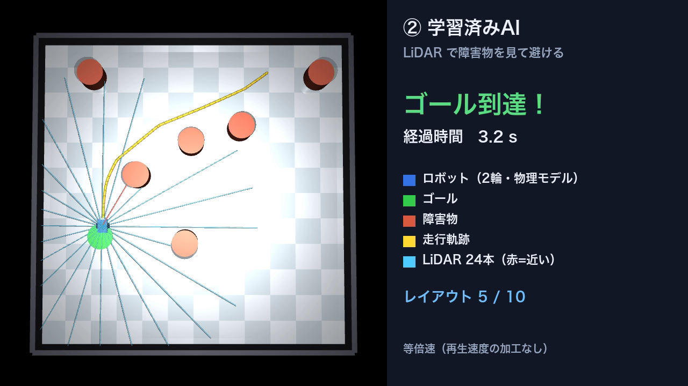

ランダムに置かれた障害物を、LiDAR（距離センサ）だけを頼りに避けて、ゴールまで自律走行する2輪ロボットを作った。 ロボットは摩擦・接触を含む物理モデルで、センサ入力から左右の車輪の速度指令を出す方策を強化学習（PPO）で獲得させた。 目的は、センサ入力から制御指令までを一つの学習済みニューラルネットで担わせ、 障害物の配置が毎回変わっても（＝特定の地図を暗記するのではなく）動けることを、 未知の配置での成功率で確かめることである。
| 項目 | 内容 |
|---|---|
| シミュレータ | MuJoCo 3.17（制御周期 20 Hz、物理 200 Hz） |
| ロボット | 左右独立駆動の2輪（車輪半径 5 cm）。転倒防止キャスター付き |
| 観測（28次元） | LiDAR 24本の距離（最大3 m）／ゴールまでの距離と方位／前進速度・回転速度 |
| 行動（2次元） | 左右の車輪の速度指令（連続値、±16 rad/s） |
| 報酬 | ゴールに近づいた距離 ×4 − 0.01（毎ステップ）／ゴール到達 +10／衝突 −5 |
| アルゴリズム | PPO（Stable-Baselines3）、MLP 128×128、8並列、300万ステップ、CPUのみ |
| 環境のランダム化 | スタート・ゴール・障害物6本の位置を毎回変更。うち3本はスタートとゴールを結ぶ直線上に置き、直進では必ず塞がれる |
キャスターの摩擦を 0 にしたつもりが、ロボットが指令の1割の速さでしか進まなかった。
MuJoCo は接触する2つのジオムの摩擦のうち大きい方を採用するため、床の摩擦（1.0）が使われていた。
キャスター側に priority を設定して、キャスターの摩擦値が優先されるようにしたところ、指令どおり（約 0.72 m/s）に走れた。
最初の評価では、LiDAR を使わない直進制御まで成功率 100% になった。課題が簡単すぎる可能性に加えて、 障害物へ直進させる単純な実験で、ロボットが障害物をすり抜けることを確認した。 原因は、MuJoCo では静止体（world body）のジオムは当たり判定がコンパイル時の位置で固定され、 実行時に位置を書き換えても見た目と LiDAR だけが動くことだった。 障害物を mocap ボディに変えて修正し、衝突判定と学習をすべてやり直した。 最初の100%という結果は無効だったため破棄した。 この経験から、良すぎる結果は先に疑い、「比較対象（ベースライン）」と「壊れ方を確認する簡単な実験」を先に用意する、という方針を取った。
学習に使っていない 300 配置での評価（決定的な方策、evaluate.py）。
| 方策 | 成功率 | 衝突率 | 時間切れ |
|---|---|---|---|
| 学習済み PPO | 95.3 % | 4.0 % | 0.7 % |
| LiDAR を使わず直進（AIなし） | 0.3 % | 99.7 % | 0.0 % |
| ランダム行動 | 0.0 % | 7.7 % | 92.3 % |
PPO の成功率 95.3 %（286/300）の 95% 信頼区間は、正規近似でおよそ 92.9〜97.7 % である（1回の学習結果に対する値）。 成功時の平均所要時間は約 6.0 秒、平均走行距離は約 4.3 m だった。

図1 学習曲線（学習中・確率的方策での直近エピソードの割合）。約15万ステップで80%を超え、その後はゆっくり向上した。


コード一式は GitHub の公開リポジトリにある（README に手順）。学習済みモデルを同梱しており、evaluate.py と make_video.py は学習なしで再実行できる。
動画は等倍速（再生速度の加工なし）。